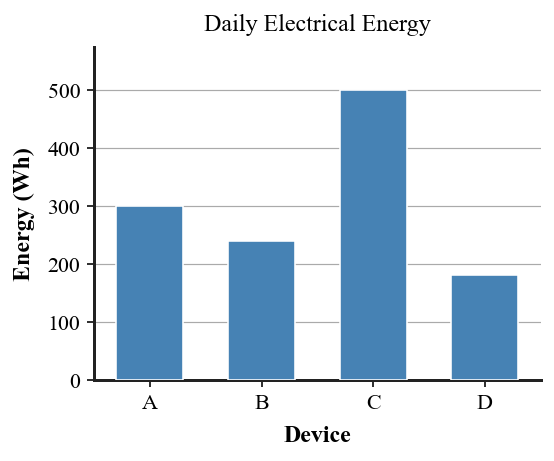

1. Define electric power in terms of energy transfer and time.
2. State the equation relating electric power, current, and voltage.
3. State the equation relating electrical energy use, power, and time.
4. Which device transfers electrical energy faster: a 1500 W heater or a 60 W lamp while each is operating?
5. Why is device power alone not enough to determine total electrical energy use?
6. A 12 V device draws 2.5 A. Calculate its electric power.
7. A 75 W lamp operates for 4 h. Calculate its energy use in watt-hours.
8. Use the bar graph to rank the four devices by daily electrical energy use and identify which comparison shows why operating time matters as well as power.

9. Device A uses 20 W for 10 h while Device B uses 100 W for 1 h. Compare their energy use and explain why the higher-power device does not necessarily use more total energy.
10. A charger runs at 5 V and 3 A for 2 h. Determine its power first, then use that result to find the energy transferred in watt-hours.
11. A student claims an LED must be less bright because it uses less electrical power than an older lamp. Explain why power input alone does not determine useful visible-light output or efficiency.
12. A solar panel advertisement reports only its peak watt rating and claims it will always deliver that energy each hour. Critique the claim using power, time, illumination conditions, and energy.
13. Electric power is
14. Which equation gives electric power in this unit?
15. Which equation gives electrical energy use for constant power?
16. A 20 V device draws 3 A. Its power is
17. A 75 W task light stays on for 4 h. How much electrical energy does it use?
18. Why can a 10 W device use more energy than a 100 W device in a day?
19. Two lamps produce similar useful light. One draws far less electrical power. Which conclusion is justified from that evidence alone?
20. Which statement best evaluates a solar-panel peak-power claim?